Konica Minolta - Configurer les périphériques
Principe
La configuration du WES Konica Minolta doit être précédée d'une configuration sur le périphérique depuis l'interface web d'administration de ce dernier.
Configurer le SSL
Préalablement à l'activation de l'Open API, vérifiez que le périphérique est doté d'un certificat SSL en cours de validité :
-
ouvrez le site web d'administration du périphérique à l'aide d'un navigateur (http://[IP_Peripherique]/wcd/spa_login.html) ;
-
authentifiez-vous en tant qu'administrateur ;
-
depuis le site web d'administration du périphérique, dans le menu de gauche, cliquez sur Sécurité > Configuration (Réglages) PKI > Configuration (réglages) certificat périphérique ;
-
vérifiez dans la liste qu'il existe un certificat en cours de validité :
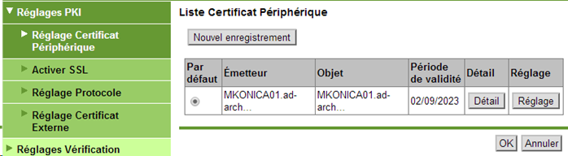
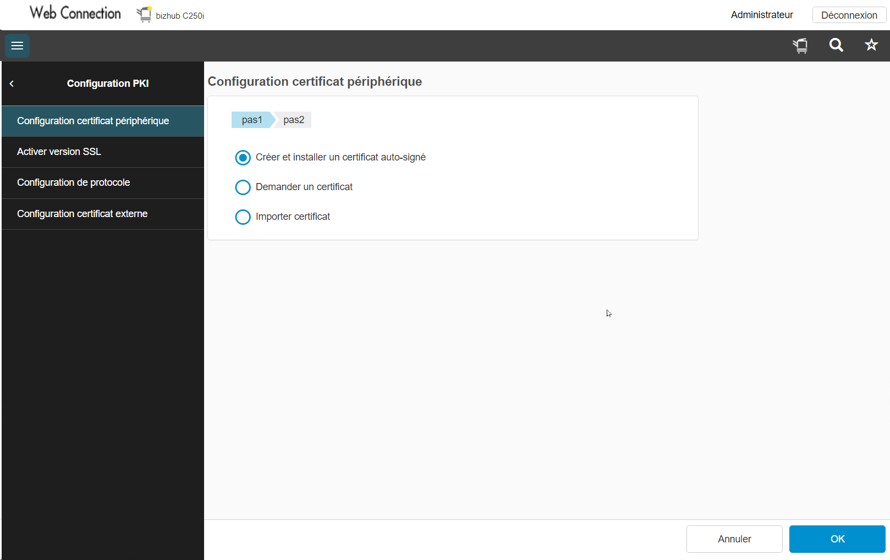
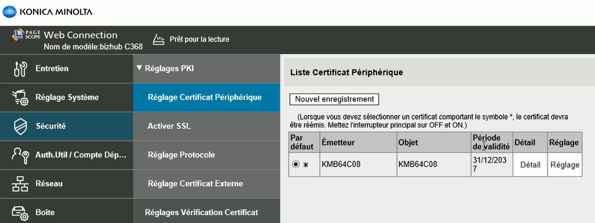
-
S'il n'existe pas de certificat ou s'il n'est pas valide, installez un nouveau certificat avant de poursuivre la configuration.
-
Revenez au niveau du menu Sécurité, cliquez sur Config. (réglages) Vérificat. Certificat et assurez-vous que le champ Configuration Vérification Certificat est fixé à OFF :
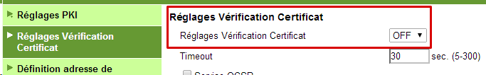
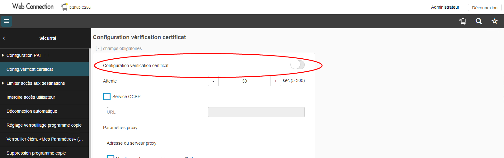
-
Revenez au premier niveau, sous le menu Home, cliquez sur Réseau > menu Configuration port TCP, puis assurez-vous que la case Utiliser SSL/TLS est cochée :
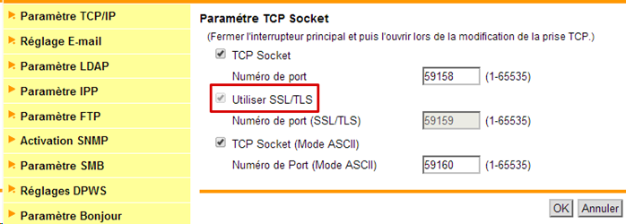
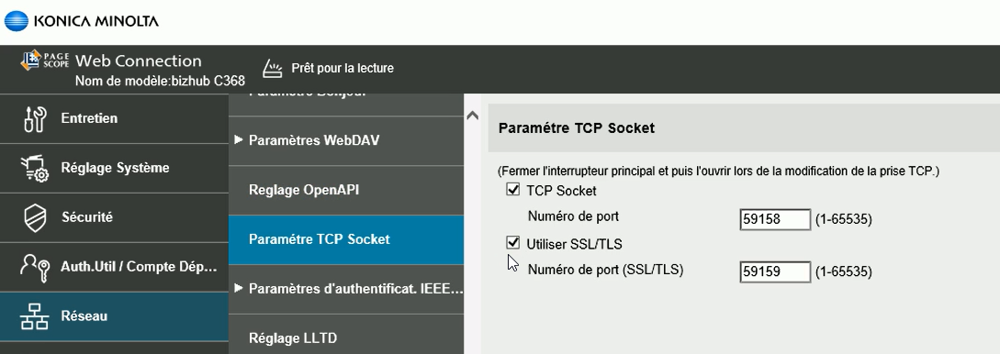
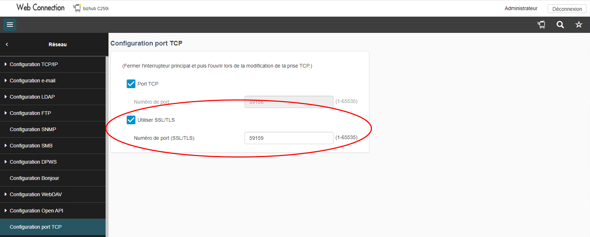
-
dans le menu Configuration OpenAPI, assurez-vous que pour le paramètre Utiliser SSL/TLS, la valeur est fixée à SSL uniquement :
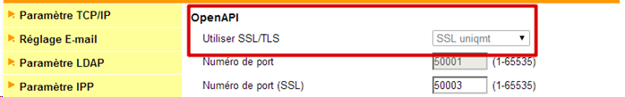
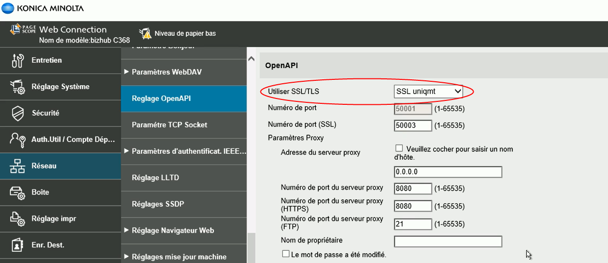
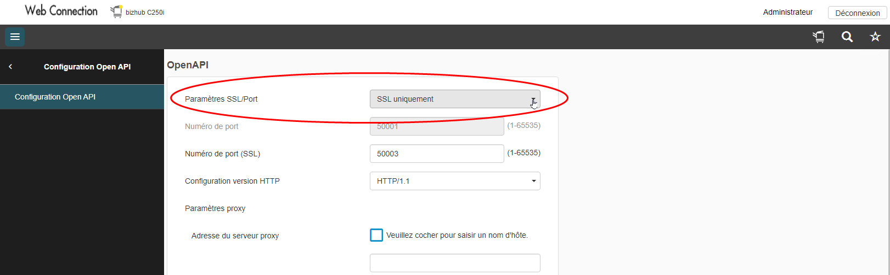
Recréer un certificat SSL
Il convient de recréer un certificat SSL dans les deux cas suivants :
-
si le certificat SSL est désigné comme certificat par défaut ;
-
si un message d'erreur apparaît après la tentative d'installation du WES.
Pour recréer un certificat SSL :
-
dans l'interface web d'administration du périphérique, dans le menu Sécurité > Configuration PKI > Configuration certificat périphérique ;
-
sélectionnez le certificat dans la liste, puis cliquez sur Configuration :
-
Cochez la case Supprimer un certificat, puis confirmez la demande de suppression.
-
Redémarrez le périphérique.
-
Reconnectez-vous à l'interface en tant qu'administrateur. Si une page blanche s'affiche, utilisez un autre navigateur pour contourner les problèmes de cache.
-
Sous l'onglet Sécurité > Configuration (réglages) PKI > Configuration (réglages) Certificat Périphérique, cliquez sur le bouton Nouvel enregistrement ;
-
Choisissez l'option Créer et installer un Certificat auto-signé :
-
Complétez les champs à l'aide des informations demandées, puis cliquez sur OK pour valider la création du certificat :
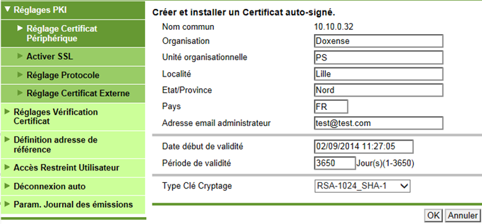
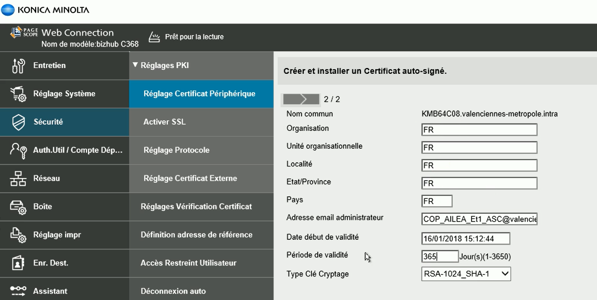
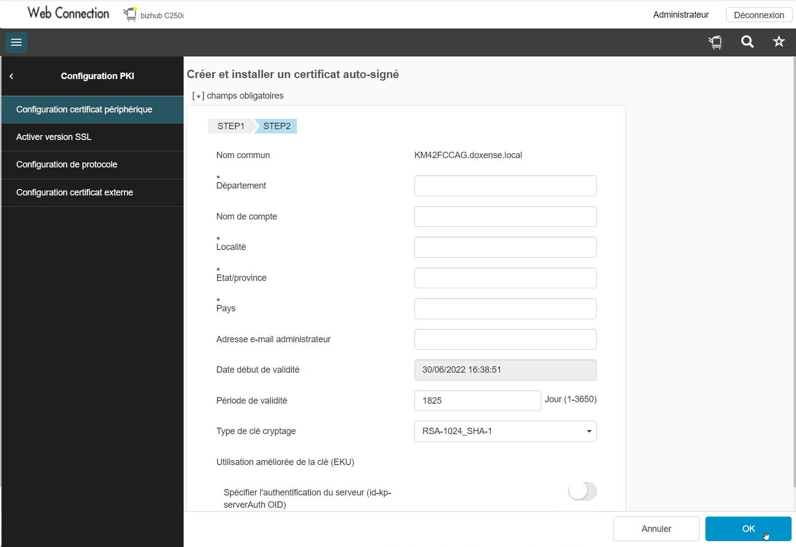
→ Un message confirmant la création du certificat s'affiche et le nouveau certificat s'affiche dans la liste.
-
Réitérez les étapes de la section Préparation du périphérique afin de vérifier que le paramétrage a bien été réinitialisé.
Configurer le pilote du périphérique
Par défaut, lorsque les utilisateurs libèrent leurs travaux d'impression, ces derniers sont silencieusement rejetés par le périphérique. Pour éviter ce fonctionnement, il est nécessaire de désactiver l'authentification dans le pilote du périphérique :
-
sur le serveur, lancez le gestionnaire d'impression, sélectionnez la file d'impression concernée par la modification ;
-
cliquez-droit et sélectionnez le menu Propriétés du périphérique ;
-
sous l'onglet cliquez sur le bouton Obtenir paramètres :
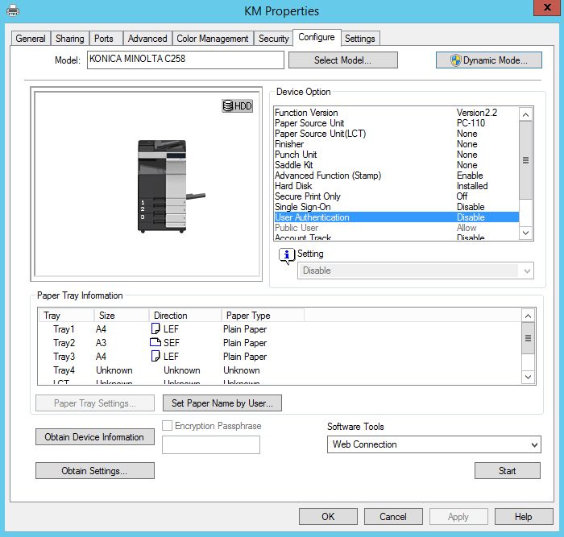
-
Décochez la case Auto puis cliquez sur OK pour valider le paramétrage :
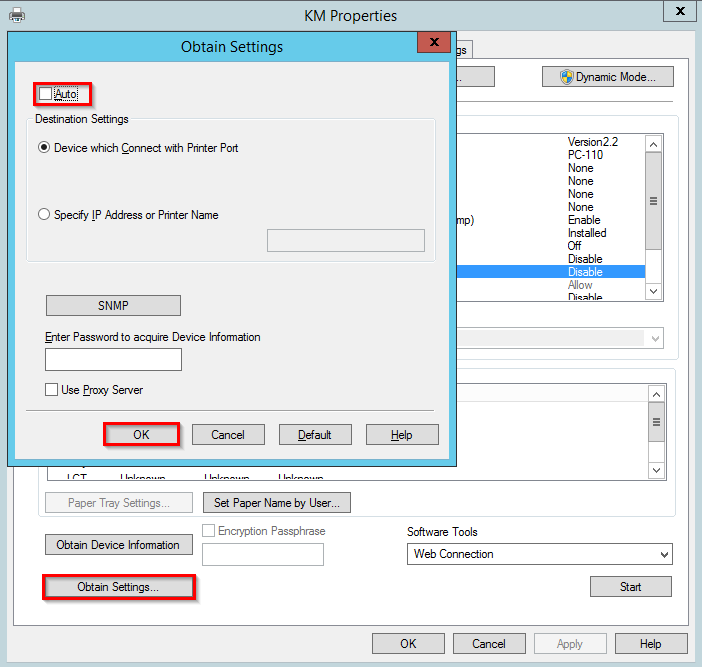
-
Sous l'onglet Configuration, dans la liste Options du périphérique, sélectionnez Authentification puis la valeur Désactivé :
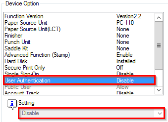
-
cliquez sur le bouton Appliquer pour valider le paramétrage :
Activer le navigateur WEB
Le WES Konica-Minolta peut fonctionner en mode standard ou en mode interface web (qui correspond au WES Watchdoc) : 
Liste de travaux en mode standard
Liste de travaux en mode WEB
Le mode WEB nécessite l'activation du navigateur WEB dans l'interface d'administration du périphérique :
-
depuis un navigateur web, accédez au site web d'administration du périphérique (http://[IP_Peripherique]/wcd/spa_login.html) ;
-
authentifiez-vous en tant qu'administrateur (avec compte et mot de passe) ;
-
cliquez sur l'onglet Réseau ;
-
dans le menu, cliquez sur l'entrée Réglages /Configuration navigateur Web ;
-
dans l'interface placez le curseur pour Activer le navigateur Web ;
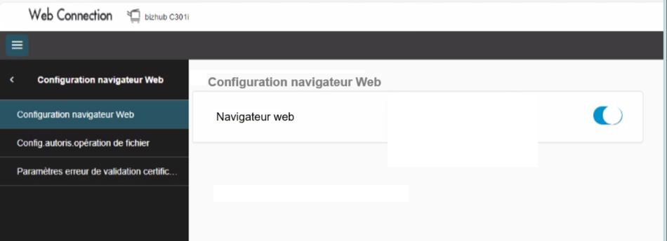
-
validez votre choix en cliquant sur OK ;
→ Dès lors, le WES s'exécute dans le navigateur du périphérique d'impression.
-
dans le menu, cliquez ensuite sur Network > WebDAV Settings > WebDAV Server Settings ;
-
dans l'interface Paramètres du Serveur WebDAV :
-
activez le paramètre WebDAV ;
-
vérifiez que non-SSL Only est sélectionné pour le paramètre SSL ;
-
-
dans le menu, cliquez ensuite sur Network > WebDAV Settings > WebDAV Client Settings;
-
dans l'interface WebDAV Client Settings, activez WebDAV Client Setting ;
-
déconnectez-vous de l'interface d'administration du périphérique.